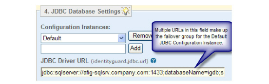

|
IdentityGuard Server 13.0 Administration Guide |
|
IdentityGuard Server 13.0 Administration Guide |
Entrust IdentityGuard offers a common failover mechanism so that you can ensure there are backup systems in place in the event that a primary system fails.
You can set up failover for any data source (databases, directories, Radius servers, and external authentication resources) that Entrust IdentityGuard uses. To set up a common failover mechanism, you simply list two or more URLs or addresses for the data source in the Properties Editor.
For example, to set up failure to a directory repository, you would specify each directory’s URL in the LDAP URL field in the Properties Editor as follows:
LDAP URL: URL1 URL2 URL3
Entrust IdentityGuard uses a ‘sticky’ round robin type of failover mechanism. It works as follows:
● When Entrust IdentityGuard needs to access a data source (for example, an LDAP directory), it tries the first URL in the list (known as the primary source). If the connection succeeds, Entrust IdentityGuard sticks to it until it fails.
● When the primary fails or is unavailable, Entrust IdentityGuard tries the second URL in the list and sticks to it until it fails.
● If the second URL fails or is unavailable, Entrust IdentityGuard tries the next URL, and so on.
In failure cases, Entrust IdentityGuard always restarts at the primary source and moves through the URL list until it makes a valid connection. As the process moves through the URL list, the connection that caused the original failure is skipped.
For example, assume:
● LDAP URL: URL1 URL2 URL3 URL4.
● Current connection is to URL1, but URL1 fails.
● The only working directory is at URL3.
In the above scenario, Entrust IdentityGuard moves through the URL list as follows:
1. URL1
2. URL2
3. URL3 (stick)
Once Entrust IdentityGuard connects to a non-primary URL, Entrust IdentityGuard tries to restore a connection to the primary at intervals determined by the following algorithm:
Time Before Retry = 2 * (number of previous restore attempts + 1)2
For example, assume:
● LDAP URL: URL1 URL2 URL3 URL4.
● Current connection is to URL2.
● No restore has been attempted to URL1 yet.
In the above scenario, Entrust IdentityGuard attempts to reconnect to URL1 in two minutes (2 * (0 + 1)2 = 2). If that fails, Entrust IdentityGuard’s next attempt occurs in eight minutes (2 * (1 + 1)2 = 8). If that fails, the next attempt is in 18 minutes (2 * (2 + 1)2 = 18), and so on, until a maximum value of 24 hours is reached. At this point, Entrust IdentityGuard stops increasing the interval, and retries the connection at a steady rate of once every 24 hours. (You can change the 24 hour maximum through the Primary Directory/Database Server Maximum Reconnect Interval field in the Properties Editor. How to set this field is described in one of the following sections.)
Upon a successful reconnection to URL1, URL1 is set to be the active host.
The high-availability options supported by Entrust IdentityGuard do not maintain any persistent state information. High-availability settings are only maintained within the lifetime of the process. After a process has been shut down and restarted, connection settings are reset to the startup conditions defined within the identityguard.properties file. This applies to all Entrust IdentityGuard Web services (that is, Administration and Authentication), Entrust Properties Editor service, Entrust Administration service and Master user shell.
Failover applies only for the URLs in the same repository configuration instance (LDAP and database data sources only); that is, it does not failover to a different repository instance.
JDBC database property settings

For example if you create a configuration instance named Default with three URLs and another called Databases2 with three URLs, the URLs in Default never failover to a URL in Databases2, or from Databases2 to Default.
Attention: If you are using failover on an Entrust IdentityGuard configuration that actively uses replica databases, you must take extra care in planning the Entrust IdentityGuard server failover strategy to ensure that the active Entrust IdentityGuard servers have access to all required data. See Using partitions for more information about managing data in this environment.